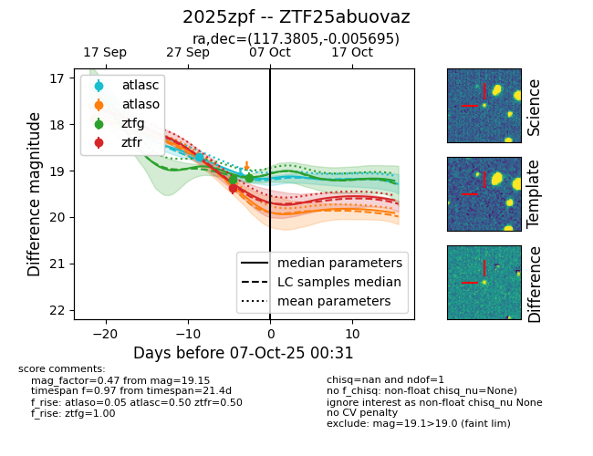
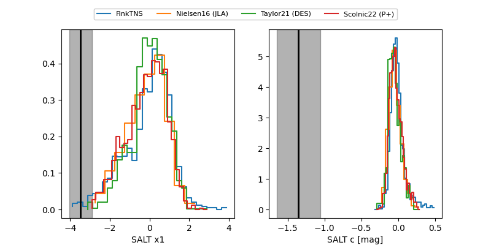

FINK: ZTF25abuovaz
Lasair: ZTF25abuovaz
ALeRCE: ZTF25abuovaz
TNS: 2025zpf
YSE: 2025zpf
ZTF25abuovaz (ztf,fink)
2025zpf (tns,yse)
equatorial (ra, dec) = (117.3805,-0.00569)
galactic (l, b) = (219.6727,+12.89151)


last atlasc=18.70, atlaso=17.95, ztfg=19.15, ztfr=19.38
1 atlasc, 2 atlaso, 2 ztfg, 1 ztfr detections